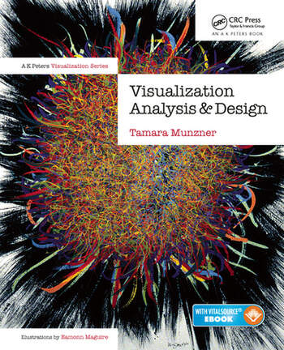
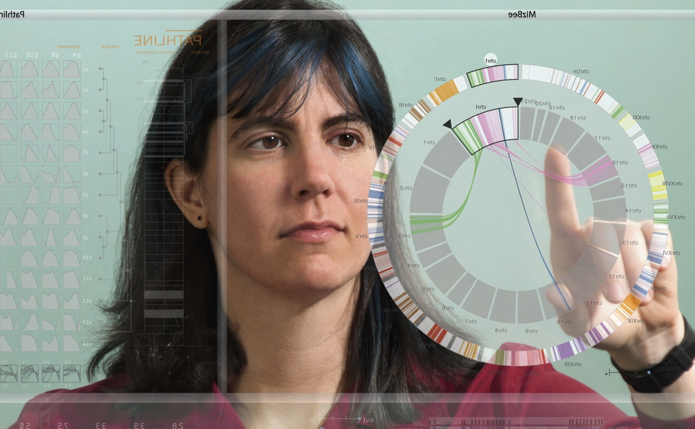
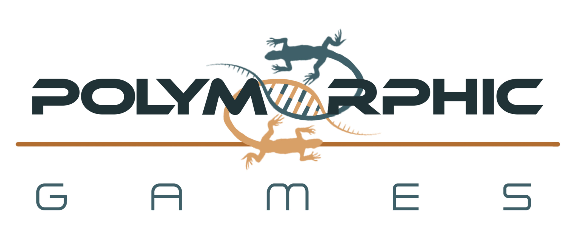
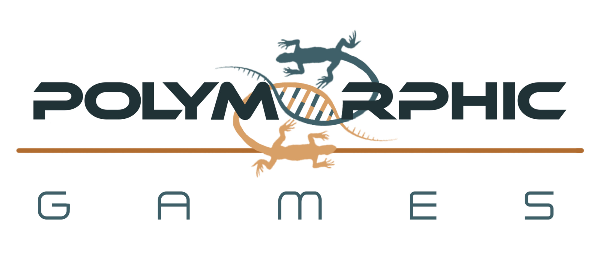

WHO ARE YOU?
“…The course is designed to be”discipline agnostic” - each student is encouraged to use data sets that they deem important / interesting. The goal is to have students learn how to develop visualizations that are relevant to their own disciplinary interests…”
Briefly:
Your name
Your discipline
Your degree progress
Your technical proficiency with data visualization
COURSE SUMMARY
Students completing this course will be able to:
Describe and manipulate tabular, network, and spatial data; transform these data into a form suitable for visualization.
Make effective data visualization design choices related to marks and channels, spatial arrangement, and components of color.
Design effective data visualizations for tabular, network, and spatial data with quantitative and categorical attributes.
Implement their data visualization designs using existing tools in R (or other toolkits preferred by the student).
Explain whether a visual encoding is perceptually appropriate for a specific combination of task and data.
Demonstrate their skills with at least two novel visualizations suitable suitable for inclusion in an online Data Science Portfolio.
The course materials are located on Canvas and the course website .
VISUALIZATION
Computers provide visual representations of datasets designed to help people carry out tasks more effectively.
Tamara Munzner Department of Computer Science
InfoVis Group
University of British Columbia
 
THE HUMAN
Why have a human in the loop?
Computer-based visualization systems provide visual representations of datasets designed to help people carry out tasks more effectively.
We don’t need visualization when a trusted fully automatic solution exists.
Visualization is suitable when there is a need to augment human capabilities rather than replace people with computational decision-making methods.
WHEN TO VISUALIZE
Visualization is useful when:
The analysis problem is ill-specified and we don’t know exactly what questions to ask in advance.
We are interested in long-term use for end users (ex: exploratory analysis of scientific data).
We are presenting known results (ex: DATA JOURNALISM - New York Times Upshot ).
We need a stepping stone to assess requirements before developing models.
Developers of an automatic solution want to refine & determine parameters.
We need to help end users of automatic solutions verify and build trust.
THE REPRESENTATION
Computer-based visualization systems provide visual representations of datasets designed to help people carry out tasks more effectively.
EXTERNAL REPRESENTATIONS: Replace cognition with perception .
WHY DEPEND ON VISION?
Computer-based visualization systems provide visual representations of datasets designed to help people carry out tasks more effectively.
The human visual system is a high-bandwidth channel to the brain.
Overview is possible due to background processing, providing the subjective experience of seeing everything simultaneously.
Significant processing occurs in parallel and pre-attentively.
What about sound? lower bandwidth and different semantics, overview not supported, subjective experience of sequential stream.What about touch/haptics? impoverished record/replay capacity, only very low-bandwidth communication thus far.What about taste, smell? no viable record/replay devices.
WHY REPRESENT (ALL THE) DATA?
Computer-based visualization systems provide visual representations of datasets designed to help people carry out tasks more effectively.
summaries lose information
details matter
confirm expected and find unexpected patterns
assess validity of statistical model
ANSCOMBE’S QUARTET is a fun example that we shall use to illustrate these points!
ANSCOMBE’S QUARTET
Code
library (ggplot2)library (grid)library (gridExtra)library (datasets)library (tidyverse)library (dplyr):: anscombe
x1 x2 x3 x4 y1 y2 y3 y4
1 10 10 10 8 8.04 9.14 7.46 6.58
2 8 8 8 8 6.95 8.14 6.77 5.76
3 13 13 13 8 7.58 8.74 12.74 7.71
4 9 9 9 8 8.81 8.77 7.11 8.84
5 11 11 11 8 8.33 9.26 7.81 8.47
6 14 14 14 8 9.96 8.10 8.84 7.04
7 6 6 6 8 7.24 6.13 6.08 5.25
8 4 4 4 19 4.26 3.10 5.39 12.50
9 12 12 12 8 10.84 9.13 8.15 5.56
10 7 7 7 8 4.82 7.26 6.42 7.91
11 5 5 5 8 5.68 4.74 5.73 6.89
Anscombe’s Quartet
The four x-y pairs have identical summary statistics.
Code
<- anscombe %>% pivot_longer (cols = everything (),names_to = c (".value" , "set" ),names_pattern = "(.)(.)" )<- tidy_anscombe %>% group_by (set) %>% summarise (across (.cols = everything (),.fns = lst (min,max,median,mean,sd,var),.names = "{col}_{fn}" ))#> `summarise()` ungrouping output (override with `.groups` argument) <- c ("set" , "x_mean" , "x_var" , "y_mean" , "y_var" )<- as.data.frame (tidy_anscombe_summary[vars]):: kable (thing)
1
9
11
7.500909
4.127269
2
9
11
7.500909
4.127629
3
9
11
7.500000
4.122620
4
9
11
7.500909
4.123249
VIZ MATTERS
Code
ggplot (tidy_anscombe,aes (x = x,y = y)) + geom_point () + geom_point (data = tidy_anscombe_summary, aes (x= x_mean, y = y_mean, color = "red" , size = 5 ),show.legend = FALSE )+ facet_wrap (~ set) + geom_smooth (method = "lm" , se = FALSE )
RESOURCE LIMITATIONS
Visualization designers must take into account three very different kinds of resource limitations:
Limitations of computers.
Limitations of humans.
Limitations of displays.
COMPUTATIONAL LIMITS
CPU time
System Memory
DISPLAY LIMITS
Pixels are precious and are the most constrained resource.
Information Density : ratio of space used to encode information vs unused whitespace.There is a tradeoff between clutter and wasting space.
Designer must find the sweet spot between dense and sparse.
HUMAN LIMITS

 
